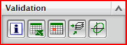
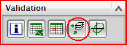

验证层合板
可以依据下列对象验证层合板：
-
总体密度
-
热稳定性，通过查看其总体热膨胀系数
-
刚度，通过查看其刚度矩阵及其等效系数
-
强度，通过访问安全系数与一指的结构和温度载荷条件
层合板建模器中的其它组

|
|
在信息窗口中显示验证结果 |
|
层合板信息到电子表格 |
将验证结果发送到电子表格 |
|
层合板信息至 CSV 文件 |
将验证结果发送至 CSV 文件 |
|
|
确认层合板阻止以下加载条件的能力：
|
|
失效包络绘图 |
显示层片失效包络，该失效包络显示层片在组合加载下可承受多少应力。 |
工作表中的层片信息

|
层合板属性 |
求解器属性和层合板属性组的回显 |
|
材料 |
在层合板中使用的所有 NX 材料的回显，显示其相关属性 |
|
层片材料 |
在层合板中使用的所有层片材料的回显，显示其相关属性 |
|
层合板定义 |
层合板的回显，显示层片总数和总厚度 |
|
层合板等价属性 |
|
验证层片强度

在开始有限元仿真之前，验证层合板承载的能力：
-
膜力
-
弯矩
-
横向剪切力
-
温度负载
|
注释 |
所有载荷分量都将同时应用到层合板上。 |
强度分析结果
点击导出到电子表格 或导出到 CSV 文件 来根据以下对象查看载荷对层合板的影响：
-
层片应力或应变
-
层片与胶合失效指数
-
层片与胶合安全系数
将计算在层片顶部、中间以及底部位置的结果以用于输出。
点击绘制应力和应变随层合板厚度的变化图  命令，可将层片 (12) 或层合板 (XY) 坐标系中的应力或应变分量显示为层合板厚度的函数。可以可视方式标识层合板中高应力或高应变的层片。
命令，可将层片 (12) 或层合板 (XY) 坐标系中的应力或应变分量显示为层合板厚度的函数。可以可视方式标识层合板中高应力或高应变的层片。